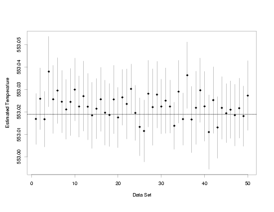

4.
Process Modeling
4.5.
Use and Interpretation of Process Models
4.5.2.
How can I use my process model for calibration?
4.5.2.1.
|
Single-Use Calibration Intervals
|
|
|
Calibration
|
As mentioned in Section 1.3, the goal of calibration
(also called inverse prediction by some authors) is to quantitatively convert
measurements made on one of two measurement scales to the other measurement scale. Typically
the two scales are not of equal importance, so the conversion occurs in only one direction.
The model fit to the data that relates the two measurement scales and a new measurement made
on the secondary scale provide the means for the conversion. The results from the fit of the
model also allow for computation of the associated uncertainty in the estimate of the true value
on the primary measurement scale. Just as for prediction, estimates of both the value on the
primary scale and its uncertainty are needed in order to make sound engineering or scientific
decisions or conclusions. Approximate confidence intervals for the true value on the primary
measurement scale are typically used to summarize the results probabilistically. An example, which
will help make the calibration process more concrete, is given in
Section 4.1.3.2. using
thermocouple calibration data.
|
|
Calibration Estimates
|
Like prediction estimates, calibration estimates can be computed relatively easily using the
regression equation. They are computed by setting a newly observed value of the response variable,
\(y^*\),
which does not have an accompanying value of the predictor variable,
equal to the estimated regression function and solving for the unknown value of the predictor
variable. Depending on the complexity of the regression function, this may be done analytically,
but sometimes numerical methods are required. Fortunatel, the numerical methods needed are not
complicated, and once implemented are often easier to use than analytical methods, even for simple
regression functions.
|
|
Pressure / Temperature Example
|
In the Pressure/Temperature example, pressure
measurements could be used to measure the temperature of the system by observing a new pressure
value, setting it equal to the estimated regression function,
$$ f(x;\hat{\vec{\beta}}) = 7.74899 + 3.93014 \cdot x $$
and solving for the temperature. If a pressure of 178 were measured, the associated
temperature would be estimated to be about 43.
$$ \begin{eqnarray}
178 & = & 7.74899 + 3.93014 \cdot x \\
& & \\
& \Downarrow & \\
& & \\
x & = & (178-7.74899)/3.93014 \\
& & \\
& = & 43.319245
\end{eqnarray} $$
Although this is a simple process for the straight-line model, note that even for this simple
regression function the estimate of the temperature is not linear in the parameters of the model.
|
|
Numerical Approach
|
To set this up to be solved numerically, the equation simply has to be set up in the form
$$ 178 - (7.74899 + 3.93014 \cdot x) = 0 $$
and then the function of temperature (\(x\))
defined by the left-hand side
of the equation can be used as the argument in an arbitrary root-finding function. It is
typically necessary to provide the root-finding software with endpoints on opposite sides
of the root. These can be obtained from a plot of the calibration data and usually do not
need to be very precise. In fact, it is often adequate to simply set the endpoints
equal to the range of the calibration data, since calibration functions tend to be increasing
or decreasing functions without local minima or maxima in the range of the data. For the
pressure/temperature data, the endpoints used in the root-finding software could even be set
to values like -5 and 100, broader than the range of the data. This choice of end points
would even allow for extrapolation if new pressure values outside the range of the original
calibration data were observed.
|
|
Thermocouple Calibration Example
|
For the more realistic thermocouple calibration example,
which is well fit by a LOESS model that does not require an
explicit functional form, the numerical approach must be used to obtain calibration estimates. The
LOESS model is set up identically to the straight-line model for the numerical solution, using the
estimated regression function from the software used to fit the model.
$$ y^* - f(x;\hat{\vec{\beta}}) = 0 $$
Again the function of temperature (\(x\))
on the left-hand side of the equation
would be used as the main argument in an arbitrary root-finding function.
If for some reason \(f(x;\hat{\vec{\beta}})\)
were not available in the software used to fit the model,
it could always be created manually since LOESS can ultimately be reduced to a series of weighted
least squares fits. Based on the plot of the thermocouple data,
endpoints of 100 and 600 would probably work well for all calibration estimates. Wider
values for the endpoints are not useful here since extrapolations do not make much sense for
this type of local model.
|
|
Software
|
Since the verbal descriptions of these numerical techniques can be hard to follow,
these ideas may become clearer by looking at the actual computer code
for a quadratic calibration, which can be found in the
Load Cell Calibration case study.
The case study contains both
Dataplot code and
R code.
|
|
Calibration Uncertainties
|
As in prediction, the data used to fit the process model can also
be used to determine the uncertainty of the calibration. Both the variation
in the average response and in the new observation of the response value need to
be accounted for. This is similar to the uncertainty for the prediction of a new
measurement. In fact, approximate calibration confidence intervals are actually
computed by solving for the predictor variable value in the formulas for prediction
interval end points [Graybill (1976)].
Because \(\hat{\sigma}_p\),
the standard deviation of the prediction
of a measured response, is a function of the predictor variable, like the regression
function itself, the inversion of the prediction interval endpoints is usually messy. However,
like the inversion of the regression function to obtain estimates of the predictor variable,
it can be easily solved numerically.
|
|
|
The equations to be solved to obtain approximate lower and upper calibration confidence limits,
are, respectively,
$$ y^* - f(x;\hat{\vec{\beta}}) + t_{1-\alpha/2,\nu} \cdot \hat{\sigma}_p(x) = 0 $$
and
$$ y^* - f(x;\hat{\vec{\beta}}) - t_{1-\alpha/2,\nu} \cdot \hat{\sigma}_p(x) = 0 $$
with \(\hat{\sigma}_p\)
denoting the estimated standard deviation of the
prediction of a new measurement. \(f(x;\hat{\vec{\beta}})\)
and \(\hat{\sigma}_p\)
are both denoted as functions of the predictor variable, \(x\),
here to make it clear that those terms must be written as functions of the unknown value of the
predictor variable. The left-hand sides of the two equations above are used as arguments in the
root-finding software, just as the expression \(y^* - f(x;\hat{\vec{\beta}})\)
is used when computing the estimate of the predictor variable.
|
|
Confidence Intervals for the Example Applications
|
Confidence intervals for the true predictor variable values associated with the observed values
of pressure (178) and voltage (1522) are given in the table below for the Pressure/Temperature
example and the Thermocouple Calibration example, respectively. The approximate confidence
limits and estimated values of the predictor variables were obtained numerically
in both cases.
|
|
|
|
Example
|
\(y^*\)
|
Lower 95%
Confidence
Bound
|
Estimated
Predictor
Variable
Value
|
Upper 95%
Confidence
Bound
|
|
| Pressure/Temperature |
178 |
41.07564 |
43.31925 |
45.56146 |
| Thermocouple Calibration |
1522 |
553.0026 |
553.0187 |
553.0349 |
|
|
Interpretation of Calibration Intervals
|
Although calibration confidence intervals have some unique features, viewed as confidence
intervals, their interpretation is essentially analogous to that of confidence intervals
for the true average response. Namely, in repeated calibration experiments, when one calibration
is made for each set of data used to fit a calibration function and each single new observation
of the response, then approximately \(100(1-\alpha) \, \%\)
of the intervals computed as described above will capture the true value of the predictor
variable, which is a measurement on the primary measurement scale.
|
|
|
The plot below shows 95 % confidence intervals computed using 50 independently generated data sets
that follow the same model as the data in the Thermocouple calibration example. Random errors from
a normal distribution with a mean of zero and a known standard deviation are added to each set of
true temperatures and true voltages that follow a model that can be well-approximated using LOESS
to produce the simulated data. Then each data set and a newly observed
voltage measurement are used to compute a confidence interval for the true temperature that
produced the observed voltage. The dashed reference line marks the true temperature under which
the thermocouple measurements were made. It is easy to see that most of the intervals do contain
the true value. In 47 out of 50 data sets, or approximately 95 %, the
confidence intervals covered the true temperature. When the number of data sets was increased to
5000, the confidence intervals computed for 4657, or 93.14 %, of the data sets covered the true
temperature. Finally, when the number of data sets was increased to 10000, 93.53 % of the
confidence intervals computed covered the true temperature. While these intervals do not exactly
attain their stated coverage, as the confidence intervals for the average response do, the
coverage is reasonably close to the specified level and is probably adequate from a practical
point of view.
|
|
Confidence Intervals Computed from 50 Sets of Simulated Data
|

|


{kind=link}